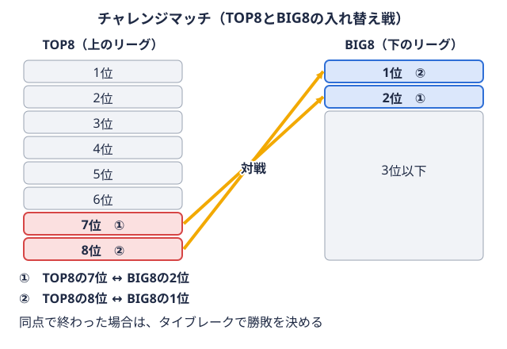

データ 2026-11-09
関東大学アメフト2026 対戦カード一覧｜TOP8全28試合と過去の対戦成績
2026年度のTOP8は残り4試合
第6節までに全28カード中24試合が終わり、法政大学の1位が確定しています（KCFAの星取表リーグ戦の全チームの勝敗を、対戦相手ごとに○と●で表にしたもの。用語辞典で見るで順位・順列とも1と表示）。2位・3位と7位・8位は、11月14日・15日の最終節で決まります。
この記事は、OB・保護者・ファンの方が「全カードの結果を一度に見たい」「この対戦は過去どうだったか」を確認できるようにまとめたものです。アメフトマニアが扱うのは関東学生アメリカンフットボール連盟（KCFA）のTOP8とBIG8で、本記事はTOP8を扱います。順位表の読み方は関東学生アメフトリーグの順位表の見方｜勝ち点と順列の決まり方も参照してください。
この記事のデータの出典と集計範囲
| 項目 | 内容 |
|---|---|
| 2026年度の結果・順位 | KCFA 星取表・試合結果（2026年11月9日時点） |
| 最終節の日程・会場 | KCFA リーグ別試合日程 |
| 過去の対戦成績 | 本サイトが保有する2023〜2026年度のTOP8試合データ |
| 注意点 | 2023年度のTOP8は7チーム制 |
最終節の順位の整理は、KCFAの順位順列決定方法を当てはめた本サイトの整理で、公式発表ではありません。
2026年度TOP8 対戦カード一覧（全28試合）
以下の表は大学名を略称（法政・早稲田・立教・中央・明治・東大・慶應・日体大）にしています。スコアは「勝者 得点-得点 敗者」で、勝者を左に書いています。
第1節（8月27日〜30日）
| 日付 | 対戦結果 | 点差 |
|---|---|---|
| 8/27 | 立教 33-20 東大 | 13 |
| 8/28 | 法政 38-13 中央 | 25 |
| 8/29 | 明治 14-13 慶應 | 1 |
| 8/30 | 早稲田 28-20 日体大 | 8 |
開幕節は明治が1点差で慶應に勝っています。
第2節（9月12日・13日）
| 日付 | 対戦結果 | 点差 |
|---|---|---|
| 9/12 | 明治 24-20 日体大 | 4 |
| 9/12 | 法政 21-16 立教 | 5 |
| 9/13 | 早稲田 35-7 慶應 | 28 |
| 9/13 | 中央 31-10 東大 | 21 |
早稲田の28点差は、ここまでの24試合で最大の点差です。
第3節（9月26日・27日）
| 日付 | 対戦結果 | 点差 |
|---|---|---|
| 9/26 | 早稲田 38-27 中央 | 11 |
| 9/26 | 慶應 27-3 東大 | 24 |
| 9/27 | 立教 20-7 明治 | 13 |
| 9/27 | 法政 31-17 日体大 | 14 |
立教が明治に13点差で勝ち、このカードは2023年度から4年続けて立教の勝利になりました（後述のカード別成績を参照）。
第4節（10月3日・4日）
| 日付 | 対戦結果 | 点差 |
|---|---|---|
| 10/3 | 中央 34-30 明治 | 4 |
| 10/3 | 法政 24-21 慶應 | 3 |
| 10/4 | 立教 27-3 早稲田 | 24 |
| 10/4 | 東大 35-14 日体大 | 21 |
中央が明治に34-30で勝ち、2023年度以降の本サイトのデータでは中央が明治に勝った初めての試合です。立教は前年度に0-48で敗れた早稲田に27-3で勝っています。
第5節（10月17日・18日）
| 日付 | 対戦結果 | 点差 |
|---|---|---|
| 10/17 | 早稲田 17-10 東大 | 7 |
| 10/17 | 立教 39-17 日体大 | 22 |
| 10/18 | 法政 14-14 明治（TB 11-3） | 0（TB決着） |
| 10/18 | 中央 42-20 慶應 | 22 |
法政と明治は同点でタイブレーク同点で終わった試合に勝敗をつける延長戦。決まった地点から両チームが1回ずつ攻撃する。 用語辞典で見る（TB）に入り、TBで法政が勝っています。
用語辞典で見る（TB）に入り、TBで法政が勝っています。
第6節（10月31日・11月1日）
| 日付 | 対戦結果 | 点差 |
|---|---|---|
| 10/31 | 法政 21-17 早稲田 | 4 |
| 10/31 | 明治 41-14 東大 | 27 |
| 11/1 | 立教 15-15 慶應（TB 15-13） | 0（TB決着） |
| 11/1 | 中央 35-28 日体大 | 7 |
この節で法政が6戦全勝となりました。立教と慶應も同点でTBに入り、立教が勝っています。
第7節（11月14日・15日）最終節
会場はいずれもアミノバイタルフィールドです。
| 日時 | カード |
|---|---|
| 11/14（土）11:00 | 慶應－日体大 |
| 11/14（土）14:00 | 立教－中央 |
| 11/15（日）11:00 | 法政－東大 |
| 11/15（日）14:00 | 早稲田－明治 |
KCFAは「状況により試合日や会場、対戦カードを変更する場合がある」としています。直前にTOP8 日程・結果やKCFAのページで確認してください。
第6節終了時の星取表
| 大学 | 成績 | 勝ち点 | KCFAの順位表示 |
|---|---|---|---|
| 法政 | 6勝0敗 | 18 | 1（確定） |
| 立教 | 5勝1敗 | 15 | 未表示 |
| 早稲田 | 4勝2敗 | 12 | 未表示 |
| 中央 | 4勝2敗 | 12 | 未表示 |
| 明治 | 3勝3敗 | 9 | 未表示 |
| 東大 | 1勝5敗 | 3 | 未表示 |
| 慶應 | 1勝5敗 | 3 | 未表示 |
| 日体大 | 0勝6敗 | 0 | 未表示 |
勝ち点リーグ戦の順位を決める点数。関東学生リーグでは、勝ち3点・引き分け1点・負け0点。用語辞典で見るは勝ち3・引き分け1・負け0です。表は勝ち点の多い順に並べたもので、KCFAが順位を表示しているのは法政だけです。早稲田と中央、東大と慶應は勝ち点が並んでおり、最終的な順列は最終節の結果を踏まえて決まります。KCFAの星取表ページには、1〜3位が全日本大学選手権に出場し、7・8位がBIG8とのチャレンジマッチ上位リーグの下位チームと、下位リーグの上位チームが戦う、リーグの入れ替えをかけた試合。 
数字で見る2026年度の試合内容
24試合のうち10試合が7点差以内で、その中にはTB決着の2試合も含まれます。最大点差は第2節の早稲田35-7慶應の28点差です。
- 法政大学は7点差以内の試合が4試合あり、4勝です（立教21-16、慶應24-21、明治14-14のTB、早稲田21-17）。6勝の点差は25・5・14・3・0（TB）・4です。
- 中央大学は7点差以内の2試合で2勝です（明治34-30、日体大35-28）。
- 慶應義塾大学は7点差以内の3試合で0勝です（明治13-14、法政21-24、立教15-15のTB）。
- 日本体育大学は7点差以内の2試合で0勝です（明治20-24、中央28-35）。
- 明治大学は7点差以内の4試合で2勝です。
例えば法政と立教の勝ち点差3は、第2節の法政21-16立教（5点差）の1試合分にあたります。7点差以内の試合の結果が、現在の勝ち点の並びに含まれている点は押さえておくと見やすくなります。各チームの試合結果は中央大学や慶應義塾大学などのチームページ、通算の記録はTOP8 記録室で見られます。
カード別の対戦成績（2023〜2026年度）
過去の成績は、本サイトのTOP8データ（2023〜2026年度）から集計しました。2023年度のTOP8は7チーム制で、日体大は2023〜2025年度がBIG8所属のため、日体大とのカードは2026年度が本データ内で最初の対戦です。表のスコアは2023→2026年度の順で、勝者を左に書いています。
4年続けて同じ大学が勝っているカード
| カード | 2023 | 2024 | 2025 | 2026 | 4年間 |
|---|---|---|---|---|---|
| 法政－中央 | 法政 44-7 | 法政 41-19 | 法政 17-3 | 法政 38-13 | 法政4勝 |
| 法政－立教 | 法政 6-3 | 法政 38-20 | 法政 26-3 | 法政 21-16 | 法政4勝 |
| 法政－慶應 | 法政 21-14 | 法政 24-10 | 法政 21-0 | 法政 24-21 | 法政4勝 |
| 早稲田－慶應 | 早稲田 17-0 | 早稲田 28-13 | 早稲田 28-13 | 早稲田 35-7 | 早稲田4勝 |
| 早稲田－中央 | 早稲田 36-0 | 早稲田 23-7 | 早稲田 48-35 | 早稲田 38-27 | 早稲田4勝 |
| 早稲田－東大 | 早稲田 44-0 | 早稲田 24-3 | 早稲田 35-23 | 早稲田 17-10 | 早稲田4勝 |
| 立教－明治 | 立教 14-10 | 立教 22-21 | 立教 24-18 | 立教 20-7 | 立教4勝 |
法政は中央・立教・慶應に、早稲田は慶應・中央・東大に、立教は明治に4年続けて勝っています。ただし法政－立教の2026年度は5点差、法政－慶應は3点差、早稲田－東大は7点差でした。法政大学と早稲田大学のチームページでは、年度ごとの成績をまとめています。
勝敗が入れ替わっているカード
| カード | 2023 | 2024 | 2025 | 2026 | 4年間 |
|---|---|---|---|---|---|
| 立教－東大 | 立教 62-35 | 立教 15-3 | 東大 17-17（TB） | 立教 33-20 | 立教3勝・東大1勝 |
| 明治－慶應 | 明治 20-0 | 慶應 27-14 | 明治 45-10 | 明治 14-13 | 明治3勝・慶應1勝 |
| 明治－中央 | 明治 31-6 | 明治 31-28 | 明治 34-31 | 中央 34-30 | 明治3勝・中央1勝 |
| 明治－東大 | 明治 27-7 | 東大 20-20（TB） | 明治 42-24 | 明治 41-14 | 明治3勝・東大1勝 |
| 法政－明治 | 法政 14-6 | 法政 38-26 | 明治 49-34 | 法政 14-14（TB） | 法政3勝・明治1勝 |
| 立教－慶應 | 立教 31-6 | 慶應 31-20 | 立教 31-0 | 立教 15-15（TB） | 立教3勝・慶應1勝 |
| 早稲田－法政 | 早稲田 26-6 | 法政 16-13 | 早稲田 31-3 | 法政 21-17 | 2勝2敗 |
| 早稲田－立教 | 立教 21-20 | 早稲田 37-3 | 早稲田 48-0 | 立教 27-3 | 2勝2敗 |
| 東大－中央 | 中央 21-11 | 東大 35-15 | 東大 24-20 | 中央 31-10 | 2勝2敗 |
| 東大－慶應 | 慶應 45-20 | 東大 14-14（TB） | 東大 24-21 | 慶應 27-3 | 2勝2敗 |
| 中央－慶應 | 慶應 7-3 | 慶應 31-28 | 中央 31-17 | 中央 42-20 | 2勝2敗 |
2勝2敗のカードは5つで、早稲田－法政は4年間で勝敗が交互になっています。2026年度に流れが変わった例もあります。明治－中央は2026年度に中央が4年で初めて勝ちました。早稲田－立教は、2025年度の早稲田48-0から、2026年度は立教27-3となっています。中央は慶應に2年続けて勝っています。
日体大との6カード
| 日付 | 対戦結果 |
|---|---|
| 8/30 | 早稲田 28-20 日体大 |
| 9/12 | 明治 24-20 日体大 |
| 9/27 | 法政 31-17 日体大 |
| 10/4 | 東大 35-14 日体大 |
| 10/17 | 立教 39-17 日体大 |
| 11/1 | 中央 35-28 日体大 |
日体大とのカードは、2026年度が本データ内で最初の対戦です。6試合はいずれも日体大が敗れ、点差は4〜22でした。最終節の慶應－日体大も、本データ内では初めての対戦になります。
最終節（第7節）の4試合と懸かっているもの
最終節の4試合で、2位・3位と7位・8位の並びが決まります。ここでの整理は、本サイトがKCFAの順位順列決定方法を当てはめたもので、公式発表ではありません。なお、タイブレークの得点は順列決定の得失点差に含まれません。
| 日時 | カード | 過去3年（2023〜2025年度） |
|---|---|---|
| 11/14（土）11:00 | 慶應－日体大 | 本データ内では対戦なし |
| 11/14（土）14:00 | 立教－中央 | 立教 20-14、立教 38-31、立教 20-10（立教3勝） |
| 11/15（日）11:00 | 法政－東大 | 法政 20-0、法政 49-14、法政 49-28（法政3勝） |
| 11/15（日）14:00 | 早稲田－明治 | 明治 16-7、早稲田 20-16、早稲田 34-20（早稲田2勝・明治1勝） |
2位・3位の争い
1位は法政大学で確定しています。
- 立教が中央に勝った場合、立教が2位です。3位は早稲田－明治の結果次第で、早稲田が勝てば早稲田が3位になります。
- 立教が中央に勝ち、明治が早稲田に勝った場合は、早稲田・中央・明治の3校が勝ち点12で並びます。3校とも当該校間で1勝1敗のため、当該校間の得失点差で決まります。明治が8点差以上で勝てば明治が3校の中で最上位（3位）、7点差以内（TB決着を含む）なら早稲田が最上位（3位）になる計算です（当該校間の得失点差は、早稲田が対中央+11、中央が対明治+4と対早稲田-11、明治が対中央-4）。
- 中央が立教に勝ち、明治が早稲田に勝った場合は、立教と中央が勝ち点15で並びます。当該校間の勝ち点で中央が2位、立教が3位です。
- 中央が立教に勝ち、早稲田が明治に勝った場合は、立教・中央・早稲田の3校が勝ち点15で並び、3校とも当該校間で1勝1敗です。当該校間の得失点差（立教は対早稲田+24、早稲田は対中央+11）と立教－中央の点差が絡み、3校のうち1校が4位になります。KCFAの条文には3校以上が並んだ場合の細かな扱いが明記されていない部分があるため、どの校が4位になるかはここでは断定しません。KCFAの発表を確認してください。
7位・8位の争い
明治大学は、東大・慶應の最大勝ち点6を上回るため、5位以上が確定しています。
- 慶應が日体大に勝てば、東大の結果にかかわらず東大が7位、日体大が8位です。東大が法政に勝って慶應と勝ち点6で並んでも、直接対決で慶應が勝っているためです。
- 日体大が慶應に勝ち、東大が法政に勝てば、東大が6位、日体大が7位、慶應が8位です。慶應と日体大は直接対決で日体大が上になります。
- 日体大が慶應に勝ち、東大が法政に敗れると、東大・慶應・日体大の3校が勝ち点3で並びます。当該校間の得失点差（慶應は対東大+24、東大は対日体大+21）で決まるため、日体大－慶應の点差次第で7位・8位が入れ替わります。この3校が並ぶケースも、どの2校がチャレンジマッチに回るかはKCFAの発表で確認してください。
タイブレークの扱いはタイブレーク規定の解説、全日本への出場校の決まり方は甲子園ボウル出場校の決め方にまとめています。
リーグ戦のあとの日程
リーグ戦のあとは、KCFAのリーグ別試合日程によると次の日程です。
| 日付 | 試合 | 会場・時間 |
|---|---|---|
| 11/28（土） | 全日本大学選手権 準々決勝 関東2位－関西3位 | 駒澤陸上競技場 14:00 |
| 11/28（土） | 全日本大学選手権 準々決勝 法政－東北/北陸代表 | スピアーズえどりくフィールド 14:45 |
| 12/6（日） | 全日本大学選手権 準決勝（法政/東北・北陸の勝者－関西2位/関東3位の勝者） | 富士通スタジアム川崎 14:30 |
| 12/19（土） | チャレンジマッチ TOP8・8位－BIG8・1位 | アミノバイタルフィールド 11:00 |
| 12/19（土） | チャレンジマッチ TOP8・7位－BIG8・2位 | アミノバイタルフィールド 14:00 |
日程や会場は変更される場合があります。過去のチャレンジマッチの結果は関東学生アメフトのチャレンジマッチ結果で、日程の調べ方は今週末の日程の調べ方で確認できます。
よくある質問
同点の試合はどう扱われますか
同点の場合はタイブレーク（TB）で勝敗が付きます。ただし、TBの得点は順列決定の得失点差には含まれません（KCFA順位順列決定方法）。詳しくはタイブレークの解説をご覧ください。
最新の結果はどこで見られますか
KCFAの星取表が公式の記録です。本サイトではTOP8 日程・結果とTOP8 順位表で確認できます。
過去の対戦成績はいつから載っていますか
本記事で使っている本サイトのTOP8データは2023年度以降です。2023年度は7チーム制で各校6試合、2024年度以降は8チーム制で各校7試合です。日体大は2023〜2025年度にBIG8で戦っていたため、日体大とのカードは2026年度の分だけです。また、2024・2025年度にTOP8にいた桜美林大学は2026年度はBIG8所属のため、2026年度のカードを軸にした本記事の表には入れていません。通算の勝率は通算勝率の解説とTOP8 記録室にまとめています。
まとめ
- 第6節までに24試合が終わり、残りは11月14日・15日の4試合です。法政大学の1位は確定しています。
- 2026年度は24試合中10試合が7点差以内で、法政は接戦4試合に4勝しています。
- 2023〜2026年度のカード別では、7カードで同じ大学が4年連続で勝ち、5カードが2勝2敗です。
- 最終節では、立教－中央と早稲田－明治が2位・3位に、慶應－日体大と法政－東大が7位・8位に関わります。
- 全日本準々決勝は11月28日、チャレンジマッチは12月19日の予定です。
人気カードの見方は観客動員と人気カードも参考になります。
参考リンク
本記事の集計値は本サイトがKCFAの公式記録から集計したもので、最終節の結果により変わります。
この部活・競技を応援したい方へ
協賛・応援はこちらから。
取材してほしい部活を募集中
あなたの部活・チームを取材してほしい方はこちらから。
オフシーズン・引退後に、長期インターンという選択
部活で培った力を実務で試す。16タイプ診断（30秒）で合う企業がわかります。